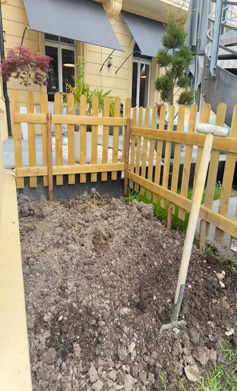
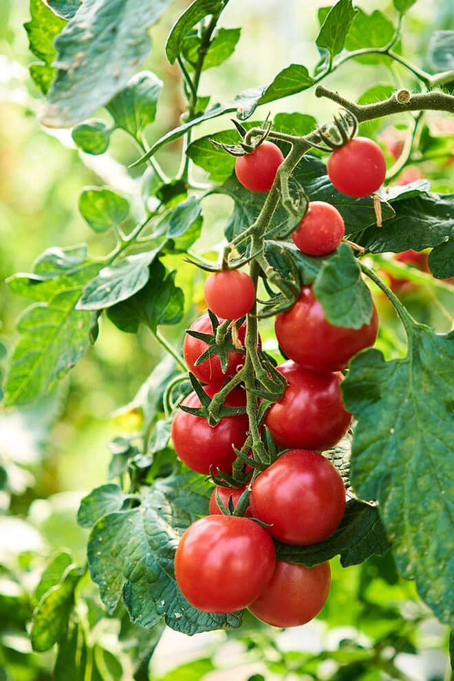

We Grow More Than Knowledge
At HIM, we cultivate more than just academic excellence—we grow nourishment, care, and connection. Our on-campus farm is a vibrant example of sustainable education in action.
Why an Educational Farm?
- Hands-on Sustainability: Learn by doing—students grow real food using eco-friendly practices.
- Health & Wellness: Fresh produce supports healthy meals on campus.
- Community Involvement: Students work together, fostering teamwork and responsibility.
- Curriculum Integration: Connects with sustainability, hospitality, and science classes.
Our Growing Philosophy
Nature is the best teacher. Through seasonal planting, composting, and organic farming, students learn how food systems work—and how they can be improved.
What's Growing?
- Tomatoes: Symbol of our farm – juicy, colorful, and nutritious.

- Herbs: Basil, thyme, and rosemary enrich both dishes and senses.
- Leafy greens: For salads that fuel bodies and minds.
Visit the Farm
Our farm is open to all students and visitors during the growing season. Come take a tour, join a workshop, or simply enjoy the green space.
Contact Us
HIM Business School
Email: contact@himbusinessschool.edu
Phone: +123-456-7890
Address: Avenue des Alpes 15, 1820 Montreux VD